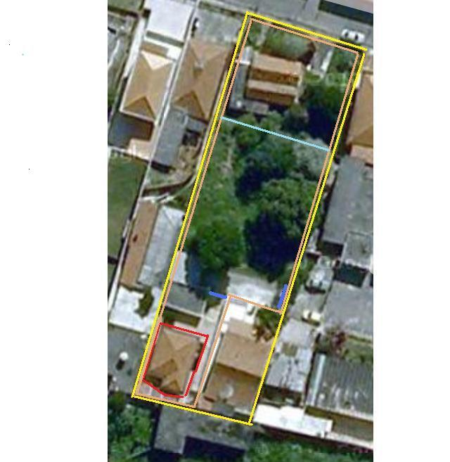
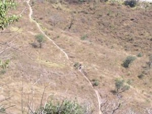
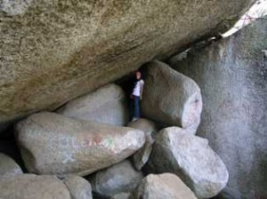
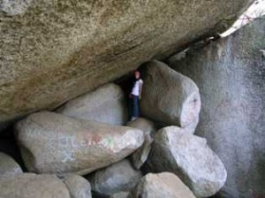
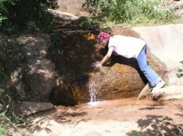
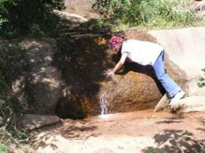
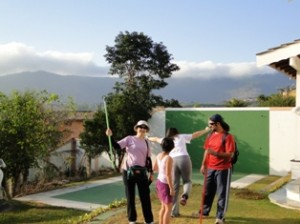
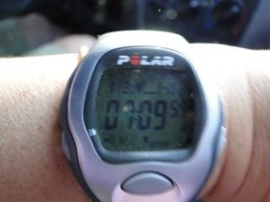
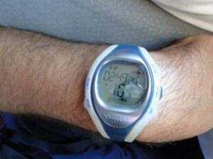

Cia. Ex-sedentário
vamo, vamo, vamo…
Como eu sou vindo (sozinho) de uma cidadezinha do Interior, morei nos quatro cantos da Grande Sâo Paulo: Santo André (casa do Alecão em 93 e 94), Bairro da Liberdade (república mista, três mulheres e dois homens, todos japas, menos eu), Bairro de Itaquera (Cohab II, Perto da Caixa d´àgua, onde morei por nove meses – assim que pari o nenê dei-o a um casal dinamarquês e voltei para a morar na casa do Alecão (99). No ano de 2000 eu cheguei em Pirituba City. Bairro que eu gostei logo de cara por causa dos 11 minutos do trem. Isto não tem preço.
Mas com a corrida eu comecei a vê-lo com pés no chão e com olhos de poeta , penso que com o impacto vai-se acionando também o coração e sentidos dantes adormecidos.
Por causa desse amor e coisas que já ouvi falar do meu Bairro Pirituba, acabei até pedindo para o meu mais novo irmão de coração Miguel Delgado, lider mundial Baleias, quem compõe a minha tríade “Ex-sedentario–Baleias–100 Juízo“, que corrigisse um insignificante equívoco de digitação no blog Baleias. É que esse maravilhoso blog é lido pelo mundo todo (não estou exagerando, este fato é registrado lá). E não queria o mundo pensasse que Pirituba é uma cidade do Estado de São Paulo que nunca ninguém foi.
Sobre as histórias. Certa vez, num local de trabalho, um colega viu um anúncio de uma casa no meu bairro e disse, sem maldade é claro, que seria uma boa idéia ter uma casa lá para veraneio, para onde ele poderia viajar nos finais de semana. Nem direi o final da história.
Mas isso me deixou meio obcecado. Cheguei a essa conclusão após refletir sobre o episódio acontecido há dois dias.
Eram 23:40 horas de terça-feira quando saí para fazer um TreinaBento de Corrida. Detalhe: descalço e sem relógio.
Jamais seria assaltado assim, pensei eu, afinal, não bastasse a falta de qualquer objeto que interessasse a bandido, estava sob a guarda do ferocíssimo Bento. Qual meu espanto quando veio na minha direção, já beirava a zero hora, um cidadão jovem todo afoito. Tive de segurar firme a minha fera (que abanava o rabo e sorria para o abrupto). O cidadão em vez de descer no ponto certo (Metro Vila Madalena) dormiu no ônibus. Sabem aquele desespero de quem acorda e desce no primeiro ponto sem ao menos perguntar onde estava. Eu ainda o vi saindo de trás do buzão.
Ele queria tomar um ônibus para direção de onde tinha vindo. Estava alucinado. Muito mais ele ficou quando eu disse que não havia mais nenhum naquele horário. O cara então disse que seguiria naquele sentido da avenida (sentido Anhanguera) até encontrar um Táxi.
Eu disse que a melhor idéia era seguir na direção contrária e ele inistiu na idéia e foi caminhando. Fui incisivo com ele, afinal, não bastasse aquela não ser a melhor opção, havendo até risco de assalto, ele ainda ia dizer pra todo mundo depois que ficou perdido no fim do mundo. Fiz ele me acompanhar, sob a promessa de que o deixaria num ponto de táxi, que além de próximo era seguro.
O tal ficou mais calmo me acompanhou alguns passos quando então parou e desconfiado quis saber porque eu estava descalço. Disse para ele ficar tranquilo que eu não estava levando ele para os ladrões que tinham acabado de me roubar os tênis (que a Mari nunca leia este blog).
No trajeto que não tinha mais 300 metros, fui mostrando e falando do Bairro e suas vantagens. Mas ele ainda estava invocado com os meus pés no chão. E me perguntou o motivo três vezes. Deixei o moço bem no ponto, localizado em frente a Avenida onde tem um Carrefour, Mc Donalds, Avenida Bandeiranes (logo abaixo da ponte) e tres vias boas de acesso à marginal. Fora um posto de combustivel dos que são point .
Voltei pra casa trotando e olhando atentamente no chão. Com a sensação de dever cumprido. Mas vou rever essa minha adoração. Talvez tenha de ficar mais contida. Quê! Descalso, trote? Ah, sim. Num outro post, quem sabe.
 Hoje de manhã fiquei pensando nas músicas que me “aceleravam”, fica aqui a dica, coloque no MP3 e ponha para escutar no fim do treino:
Hoje de manhã fiquei pensando nas músicas que me “aceleravam”, fica aqui a dica, coloque no MP3 e ponha para escutar no fim do treino:
E você o que costuma escutar no treino?
Ontem voltei a nadar depois de longos 15 anos longe das piscinas. Nadar faz parte da estratégia para meu condicionamento físico, uma vez que não gosto de frequentar academias.
Irei alternar os treinos de uma forma a qual não me canse e não desamine, perdendo o foco do que quero.
Ontem foram 40 minutos de piscina, não sei ao certo quantos metros nadei e nem estou preocupado. Sai até meio tonto rsssssss mas a sensação de ” missão cumprida ” não tem preço.
Hoje irei novamente fechando assim uma semana inteira me exercitando por cerca de 1h todo dia.
Firme e forte em busca do objetivo ! Vamo lá !
3 dias nessa semana sem faltar ao treino … segunda 5 caminhando 3 correndo devagar .. duas voltas no ibira …
terça 2 voltas pelos percurso de 3k caminhando forte
Hoje mais duas voltas mas invertendo os tempos … 3 caminhando e 5 correndo … Pra cima deles Santoooossssss hehehehehehehehehe
") Este desafio (5 quilometros, da maratona de revezamento do Pão de Açucar) é uma forma de voltar, de emagrecer e afastar os fantasmas que me assustam (possíveis problemas cardíacos futuros). Quando vou ao cardiologista, apesar de meus exames darem 100%, eles me colocam medo por causa do sobre-peso.
Este desafio (5 quilometros, da maratona de revezamento do Pão de Açucar) é uma forma de voltar, de emagrecer e afastar os fantasmas que me assustam (possíveis problemas cardíacos futuros). Quando vou ao cardiologista, apesar de meus exames darem 100%, eles me colocam medo por causa do sobre-peso.
Para mim, o desafio significa o início da longevidade, dar mais uma alegria aos meus filhos e provar a mim mesmo que é possível sim conseguir quando muitos dizem o contrário.
Bem … sempre estive de dieta mas nunca levei a sério como agora. Por força da circunstância tenho que cuidar da saúde e ocupar o tempo livre. Optei por voltar a caminhar / correr e após longos anos voltar a nadar. Sim nadar, apesa de hoje estar longe da minha melhor forma eu nadei por longos 12 anos quando “muleuqe”. Volto nesta quinta-feira pela manhã no Sesc Ipiranga.
Voltando ao assunto caminhar / correr estou treinando no Ibirapuera toda noite. E ontem ja comecei a alternar o meu treino com 5 minutos de caminhada e 3 correndo devagar. Fiz a volta do parque por duas vezes o que nos dá quase 6 km, isso tudo em 52min 48s . Somente caminhando esse tempo estava em 60min.
Sem contar a perda de peso que nos ultimos 10 dias foram 5kg. Estou empolgado de verdade, tenho objetivos claros a alcançar e para isso tenho que estar com minha saúde em ordem.
Bom, vou ficar mais assíduo nos posts para que vocês acompanhem minha evolução.
Abraços
Luciano
Como fatos dizem mais do que 1000 palavras de lamentação, lá vai:
Nome: Claudio … Dundes
Tempo parado: 25 dias.
Terça-Feira 27.07.2010
Peso: 108 quilos
Treino: 3km em 26Min08Seg – 91 voltas de 33 metros, cada. Tempo médio por volta: 17Seg
Inspiração do dia: treino em pista do Jorge Cerqueira
Percepção de esforço: mais fácil do que imaginei que fosse
Estado emocional: 10 (estou feliz)

Legenda – traçados:
Vermelho: micro circuito do treino – entorno da casa que eu moro
Amarelo: extensão total do terreno – incluindo casa do Tio, do lado, e a casa do Vô da Mari, alugada, só passei a cerca uma vez, para pegar jaca.
Marron/beje: meu sonho de consumo – se eu ficasse rico compraria tudo isso para mim, mas será vendido muito antes disso acontecer
Azul: portões
Azul calcinha (mais parece verde claro): limitação do espaço do Cachorro Bento – só pode correr livre até ali, tadinho rs…
Na ultima semana de férias do trabalho consegui treinar um pouco, na semana anterior não foi possível choveram todos os dias.
Os treinos da semana passada foram apenas três todos realizados no Ibirapuera, segunda corri 18 km, terça 12 km e quinta 24 km treino esse que valeu por um longão já que sexta, sábado e domingo eu não treinei, amanhã volto à rotina de treinos aqui no Museu do Ipiranga, preciso pegar firme.
Semana retrasada fiz minha inscrição pra Meia Maratona de São Bernardo do Campo depois faço um novo post contando como foi.

Não tenho treinado como meus colegas de post, ainda levo uma vida meio sedentária ou está faltando um pouco mais de disciplina, pois o clima de férias escolares e o friozinho estão me deixando preguiçosa.
Entretanto, esporadicamente tenho feito alguma coisa, alguma peripécia.
Tentei conciliar a ida do maridão ao Rio de Janeiro para correr…….. mas o queridão perdeu o rumo, atravessamos o Túnel Rebouças que nos leva ao outro lado da cidade, literalmente e quando conseguimos voltar a Lagoa já tinha perdido o horário de apresentação. Imaginem meu bico!!! Fiquei hiper-super-mega mal humorada………. tinha me preparado tanto psicologicamente para os 7,5km…….. bom nem preciso comentar a frustração…….
Mas nada como um feriadão para abafar a frustração. Fomos comemorar o niver da Melinha em Atibaia e eu como uma mãe esportista fiz um convite meio que intimidador, mas ao mesmo tempo desafiador………. Vamos fazer a trilha da Pedra Grande eu, você e o Igor?! Já tinha esquematizado mentalmente tudo, o maridão ficaria com a Sy, pois está se recuperando da última crise de gota.
Melinha já fez essa caminhada (trilha) 2 outras vezes, mas há anos atrás, a primeira foi com o maridão e como a Sy era pequenina fiquei em casa, nesta caminhada somente de ida levaram 6 hs, descontando o fato de ser caminho novo para eles e paradas para fotos, o dia estava muito quente e eles saíram de casa no meio da manhã……. Alega o maridão que o pedido de resgate foi por conta de que Melinha estava cansada……. na verdade acho que ele não agüentou, porque no penúltimo lance de subida na pedra ele apenas demorou uns 20 minutos e Melinha foi 2 vezes ao encontro dele…….. e nós já estávamos aguardando-os de carro. Neste episódio depois de chegarmos em casa, eles terem tomado aquele banho e feito a merecida refeição o maridão teve crises forte de caimbras nas pernas no início do repouso. (…. selecionando fotos)
 
VISTA-TRILHA-PEDRA-GRANDE- 012 – melinha na mangueira
17GO2003-010


TRILHA-PEDRA-GRANDE-019 TRILHA-PEDRA-GRANDE-021


TRILHA-PEDRA-GRANDE-022 TRILHA-PEDRA-GRANDE-023


TRILHA-PEDRA-GRANDE-078 TRILHA-PEDRA-GRANDE-086
 

TRILHA-PEDRA-GRANDE-055 TRILHA-PEDRA-GRANDE-056


TRILHA-PEDRA-GRANDE-127 TRILHA-PEDRA-GRANDE-128


TRILHA-PEDRA-GRANDE-176 TRILHA-PEDRA-GRANDE-177
 

TRILHA-PEDRA-GRANDE-184 TRILHA-PEDRA-GRANDE-190


TRILHA-PEDRA-GRANDE-201 TRILHA-PEDRA-GRANDE-205


TRILHA-PEDRA-GRANDE-209 TRILHA-PEDRA-GRANDE-211
Siga o link abaixo e veja todas as fotos
http://anarun.myphotoalbum.com/view_album.php?set_albumName=album01
A segunda vez que eles fizeram a trilha a Pedra Grande foi no meu aniversário (outubro) que não me recordo o ano agora, mas desta vez foram em um grupo de +- 70 pessoas da empresa do maridão e o percurso seria ida e volta. Saíram as 7 hs e no meio da tarde já estavam em casa. Foram recebidos com churrasco. Via-se a exaustão do percurso, mas todos alegres e sem ter conhecimento do meu natalício acabaram cantando os Parabéns com direito a um pedaço de bolo…. Desta vez também não fui, como uma boa anfitriã fiquei para organizar o churrasco e aguardar o pessoal. (…. selecionando fotos)
Eis a oportunidade que me aguardava agora eu poderia estar fazendo/desbravando a Trilha da Pedra Grande. Eu pensei em subir e o maridão ir nos buscar de carro, ledo engano, quando eu disse que iríamos fazer a trilha ele nos intimidou e disse que deveríamos subir e descer!!! Sem apoio, sem mordomia de nos buscar de carro. É preciso deixar claro o grande sarcasmo do maridão, porque ele achava que eu não conseguiria, aliás, aquele apoio bem incentivador, um companheirismo ímpar……rs …. eu nem ligo.
Na sexta a noite (09/07) passamos no supermercado para comprar barrinhas de cereal e cookies de aveia para o percurso. Depois em casa enchemos as garrafas de água, jantamos e eu fui dormir não tão tarde, pois o combinado era sairmos as 7 hs.
O celular me despertou as 6 hs, acordei a turma e tratei de tomar meu banho, depois tomamos o café da manhã, arrumamos as mochilas e o maridão foi nos levar ao pé da trilha.
Aqui cabe um comentário sobre a Pedra Grande, existem várias trilhas para alcançar o pico da Pedra Grande, a que Melinha foi às outras 2 vezes é uma que fica perto do Condomínio Panorama, perto das torres de antenas.
Pesquisando na internet, pois queria informar dados mais técnicos (não encontrei nada, sniff), fiquei sabendo que existem 3 opções de trilhas: das “Mangueiras”, a dos “Monges” e a da “Minha Deusa”. Na verdade não sei qual trilhamos, mas um pouco antes de chegarmos no grande mirante e na plataforma de 22.400 metros quadrados elas se encontram e nos levam a um mundo fantástico de grandes pedras e mirantes sensacionais.

01 – Vista da Montanha Pedra Grande
A Pedra Grande com 1.450 m é o ponto mais alto de Atibaia. De lá pode avistar-se até os municípios vizinhos (Bragança Paulista, Piracaia, Jundiaí, Nazaré…). Para os mais corajosos há a possibilidade de saltar de asa-delta e parapente. Também existe o acesso de carro pela Rodovia D. Pedro I, km 65.
Começamos a trilha as 8hs20 min, acertamos nossos cronômetros, o sol estava presente e ainda tímido, com nevoeiro que poderão ser percebidos pelas fotos.

02- saída de casa

03 – Pedra Grande ao fundo

04 – início da trilha

07 – cronometrando

08 – ajustando cronometro

09 – início da subida
A trilha é desafiadora, enquanto subida não assusta, mas a descida seria brava, porque numa parte do trecho a terra é amarela com miúdas pedrinhas soltas e bastante íngremes. A paisagem é linda e você fica observando a cidade cada vez menor. Existem muitas pedras no meio do caminho cuja parada é obrigatória para contemplação e fotos.


14 – obstáculos do percurso
Durante a trilha encontramos 2 corredores e, em virtude de um deles estar usando uma regata da corrida de montanha de 2000 eu o indaguei se iria participar da corrida do final do mês, sendo sua resposta afirmativa. Eu não tinha reparado no tênis, mas segundo o Igor (meu norinho) o tênis parecia ser o de corrida. Estranhei porque eu também estava usando um e escorreguei muito, não achei o tênis apropriado para corrida naquelas circunstâncias.
Chegamos ao topo com quase 4 hs, descansamos e contemplamos a paisagem por uns 15/20 min para nosso retorno. O Igor ficou bastante frustrado quando não viu o carrinho que vende pastel e caldo de cana (segundo o maridão existe o tal carrinho e eu disse que seria nosso prêmio), mas comemos as bananas e um pouco de cookies de aveia.
A descida como eu previ foi com calma e vários escorregões (terra solta e descidas íngrimes), meu medo foi o de ficar muito machucada e precisar de resgate, porque durante a descida não encontramos muitos caminhantes e o celular as vezes fica sem sinal e como dizer onde estar, não existem marcos. Agora o sol já estava mais forte e durante quase todo o percurso não há sombra.
Por toda a trilha existem sulcos (alguns com pequenas elevações que sinalizam ser pequenos degraus, mas profundos) que nos auxiliam tanto na subida quanto na descida. No retorno foi providencial esses sulcos e, como não cabem as 2 pernas paralelas eu as usei para uma servir de apoio de forma a não escorregar pirambeira abaixo (imaginando a cena, seria com quase andar de cócoras). Com isso acabei forçando o joelho e senti um pouco a parte anterior que veio fisgando 3/2 da descida. Numa das paradas Melinha fez uma massagem que providencialmente parou de doer (acho que foi por conta de não ter feito alongamento para a descida).

40 – visão dos sulcos na trilha
Depois de termos passado pela mangueira quase no final do caminho encontramos o maridão e a Sy que vieram nos buscar no final da trilha.
Acho que eu conseguiria chegar até em casa a pé (talvez mais uns 20/30 min de caminhada em terreno plano), mas a maioria ganhou e voltamos de carro.
O percurso total foi de 7hs9min e, somente a descida 2hs49min.

72 – tempo final da caminhada ida e volta

73 – tempo de descida
As dores do pós caminhada ocorreram somente no domingo e acentuado na segunda para mim. Como forcei muito as coxas a dor perto do joelho foram maiores com o sentar e levantar-se do dia a dia.
Para minha surpresa Melinha me disse na terça (13/07) que podíamos repetir a façanha todo mês já que eu quero participar de uma corrida de montanha. Eu fiquei surpresa, mas não com medo.
Tai, um desafio tentador….
(ainda estou postando as fotos!!! CONFIRAM)


Levando em consideração que somos resultado
de uma costela do homem, nada mais justo do que prestarmos
uma homenagem a eles criando o Dia Internacional do Homem.
 Quem se veste como pingüim no dia do matrimônio?
Quem se veste como pingüim no dia do matrimônio?
O humilde homem!

Quem corre o risco de ser assaltado e morto na saída da boate,
cada vez que participa dessas reuniões noturnas com os amigos,
enquanto a mulher está bem segura em casa na sua caminha?
O desprotegido homem!

Quem é o encarregado de matar as baratas da casa?
O valente homem!  Quem apanha quando chega em casa com marca de batom na camisa
Quem apanha quando chega em casa com marca de batom na camisa
e é obrigado a dar explicações que nunca são aceitas?
O incompreendido homem!


 O suplício de fazer a barba todo dia?
O suplício de fazer a barba todo dia?
O desespero de uma cueca apertada?
O mártir homem!

Ter a obrigação de ser um atleta sexual?
O vigoroso homem!


Ter que agüentar a sogra que chega
para ficar três dias em casa e acaba ficando três meses?
O submisso homem!

Sem falar, de ter que bancar algumas mulheres,
todas as suas vaidades, frescuras, plásticas e outras cositas mais.
O Santo Homem!


Homens: Isto é uma brincadeira para que você possa
também sorrir conosco neste dia.
Fica aqui registrado toda nossa gratidão e respeito
e o reconhecimento de que sem vocês nada seriamos.
Amamos vocês!
.jpg "DSC01704 (1024x576)")
.jpg "DSC01867 (1024x576)")
.jpg "DSC01928 (1024x576)")
.jpg "DSC01948 (1024x576)")
.jpg "DSCN5637 (1024x768)")
.jpg "DSCN5697 (1024x768)")

.jpg "IMG_7308 (1024x768)")

{kind=link}
Últimos comentários